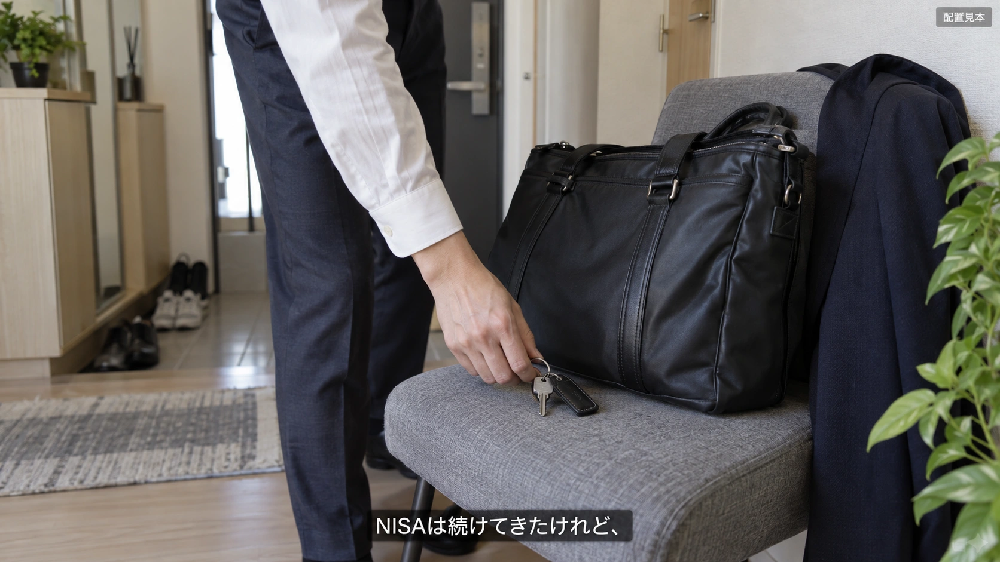
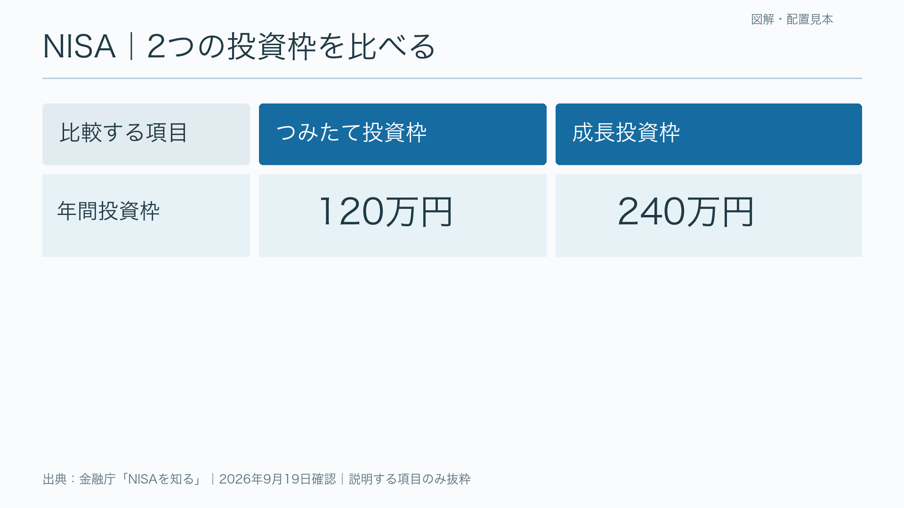
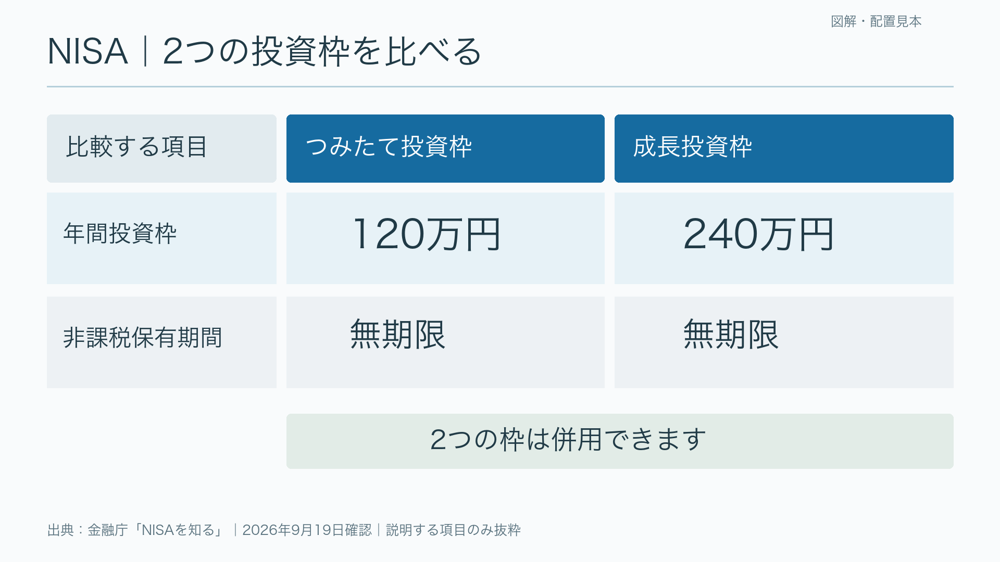
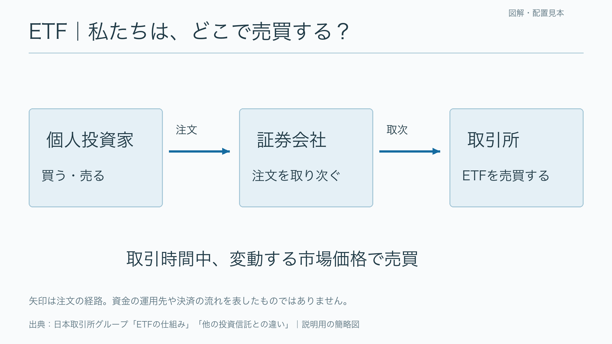
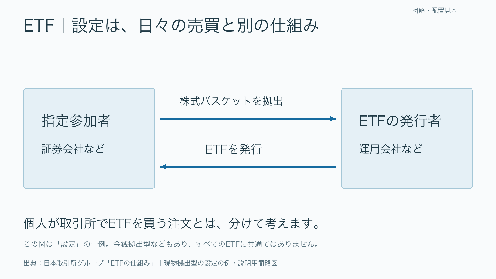
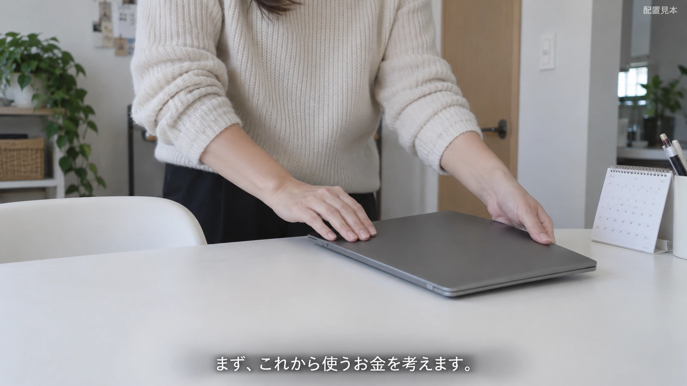

50代からのお金の育て方
編集提案・改訂3｜声で話し、映像で感じ、図解で理解する
チャンネル企画書 ／ 今回の見本6枚を保存 ／ 前回の5案・20枚（旧案） ／ 初回の5案・20枚
編集の主軸を修正します
日常や気持ちの話は、情景を見せる。制度・比較・仕組みの話は、図解を見せる。 上に大きな問い、下に同じ意味の字幕を置く画面は、標準から外します。
前回は「積み立てるだけで、いい？」という一枚絵を読みながら、下の字幕も読む構成でした。語りを聞く動画として、視線の置き場と情報の役割を整理できていませんでした。色や絵柄を変えても、この問題は解消しません。
「生活のコミックエッセイ」を主力にする推薦は撤回します。今回の推薦は 落ち着いたナレーション＋生活の映像＋説明する図解。アニメ調の絵に文字を詰める形式は採用前提にしません。静止画のイラストを使う場合も、日常の情景として見せます。
50代女性、NISA経験者、こよみ52歳・管理資産800万円の架空ケース、あのんの落ち着いた声、一緒に考える立ち位置は引き継ぎます。今回の変更は画面と編集の役割です。
画面の役割は3つに絞る
| 話していること | 見せるもの | 画面の文字 | 編集する意味 |
|---|---|---|---|
| 迷い・生活・気持ち | 通勤、仕事を終える手元、予定を確かめる情景 | 必要な場合、下に発話字幕を一系統。上の要約は置かない | 視聴者が生活を想像できる |
| 制度・商品の違い | 比較表、マトリックス、関係図 | 項目名・数字・矢印・短い図の名称。大きな全文テロップは出さない | 見ることで違いや関係が分かる |
| 実際にどう確認するか | 必要項目だけの操作・記録見本 | 確認箇所のラベルだけ。全体の結論カードを重ねない | 次に何をするか分かる |
章タイトルは切り替え時に短く出す程度。常時の大見出し・常設アバター・動く波形・意味のない株価チャートは不要です。図解のタイトルは対象を示すために残せますが、発話を言い換えた標語にはしません。
見本①｜情景＋字幕一系統

上の領域は帰宅の情景です。声で「NISAは続けてきたけれど、この先も同じ積立でいいのかな」と話し、字幕は下だけ。大きな「積み立てるだけでいい？」という画像は挟みません。
これはAI生成の静止画による配置見本です。実際の素材動画では、鍵を置くなど一つの動作が終わるまで見せます。見本の人物・住居は、こよみやあのん本人の記録ではありません。
見本②｜制度の違いを、同じ軸で比べる


最初に2つの枠と年間投資枠を比較。その後、同じ表に保有期間と併用の説明を追加します。表を読む間は背景動画を止め、話している行だけ色を少し強めます。金額のカウントアップや各セルの飛び込みは使いません。
金融庁の説明では、年間投資枠はつみたて投資枠120万円・成長投資枠240万円、非課税保有期間は無期限で、2つの枠は併用できます。この見本は説明項目を抜粋した表で、制度の全条件を網羅していません。対象商品、非課税保有限度額、売却時の扱いなどは、話す回で別の図へ分けます。金融庁「NISAを知る」
見本③｜ETFの仕組みは、二つの場面に分ける

まず「個人がどこで売買するか」を見せます。矢印は注文の経路で、資金が運用先へ流れる図ではありません。通常の投資信託との違いを説明する回なら、ここから価格の決まり方の比較に進めます。日本取引所グループ「他の投資信託との違い」

次に、日々の売買と別の「設定」を示します。現物拠出型の例として、指定参加者が株式バスケットを拠出し、ETFが発行される関係を描いています。金銭拠出型などもあるため、すべてのETFに共通する図とは扱いません。交換の逆向きの流れや資産保管の役割は、この画面へ詰めず別の説明段階にします。日本取引所グループ「ETFの仕組み」
「ETFの座組み」を説明するなら、誰が・何を・どこで行うかを見せます。金融らしいアイコンを置いただけの画面にはしません。この2枚は別テーマの図解例で、NISAの60秒へ両方を押し込みません。
見本④｜説明が終わったら、生活へ戻る

図解が終わったら、仕事を終える手元などの情景へ戻ります。声で自分の判断へつなぎ、下の字幕だけを送ります。「何に、いつ、いくら使う？」という大見出し付きのまとめ画像を必ず挟む必要はありません。
実際の支出整理を教える回なら、次の章で記入例を出します。生活の情景・制度の図・作業の実演を、同時に一画面へ載せない編集です。
60秒の編集例｜NISAの枠と、自分の積立額
台詞は映像検討用の仮原稿。秒数は試作の目安で、収録時の間を優先します。語りだけで要点が分かり、画面を見ると比較がしやすくなる構成です。
| 秒数 | ナレーション | 画面・素材 | 動きと読む時間 | 字幕 |
|---|---|---|---|---|
| 0〜10 | NISAは続けてきたけれど、この先も同じ積立でいいのかな。そう迷うことがあります。 | 帰宅や移動の動画。K1は配置見本。既存M10も移動の代案 | 一つの動作。10秒に足りない素材を無理にループしない | 下に発話字幕だけ。上の問いはなし |
| 10〜18 | まず、制度の上限を整理します。NISAには、二つの投資枠があります。 | K3-1の列見出しを表示 | 動画から無地の図解へカット。見出しを読み終えて次へ | 大きな焼き込み字幕なし |
| 18〜32 | 年間の投資枠は、つみたて投資枠が120万円。成長投資枠が240万円です。 | K3-1の年間投資枠の行 | 120万円、240万円の順に強調。数字を位置移動させず、最後6秒は静止 | 切り替え式字幕に原稿を収録 |
| 32〜43 | 非課税で保有できる期間は、どちらも無期限。二つの枠を併用することもできます。 | K3-2へ保有期間の行と併用表示を追加 | 完成した表を最後5秒以上保持。次の話を先走らない | 図の上に全文を重ねない |
| 43〜50 | ただ、上限まで投資することが、自分の目標とは限りません。 | 同じ表を保持し、行の強調を解除 | 新しい標語は出さず、説明の区切りまで保持 | 切り替え式字幕 |
| 50〜60 | 私も、これから使う予定のお金を考えて、続けられる積立額を整理してみます。 | 手元や予定確認の動画。K2は配置見本。既存M01は計算の代案 | 日常へ戻る。締めの文字カードなし | 下に発話字幕だけ |
この60秒は制度の一部と問いのつなぎ方を示す編集例です。NISA経験者向けの本編を毎回制度入門から始める提案ではありません。テーマに必要な前提だけを短く整理します。
ETFを説明する回の60秒例
| 秒数 | ナレーションの要旨 | 画面 | 動き | 字幕 |
|---|---|---|---|---|
| 0〜10 | ETFは投資信託の一種。ただ、普段の買い方には違いがある | K2に近い日常の手元動画 | 証券アプリを捏造せず、生活から導入 | 下だけ |
| 10〜25 | 個人は証券会社を通して取引所でETFを売買する | K4-1 | 個人→証券会社→取引所を声と同じ順で強調 | 焼き込み全文なし |
| 25〜35 | 取引時間中、変動する市場価格で売買できる | K4-1を保持 | 図を動かさず、説明後も保持 | 切り替え式字幕 |
| 35〜50 | 一方、ETFを設定する場面には指定参加者が関わる。現物拠出型では株式バスケットとETFをやり取りする | K4-2 | 上の矢印、下の矢印の順に表示。二つ出てから保持 | 切り替え式字幕 |
| 50〜60 | 自分の売買と、ETFの設定を分けて捉える。商品ごとの仕組みは次に確かめる | K4-2を保持 | まとめ用の別画面を増やさない | 切り替え式字幕 |
全体の理解を優先し、設定・交換・運用・保管・価格形成を1分ですべて説明しません。本文台詞は本制作時に整えます。今回は完成動画や収録音声は作っていません。
字幕のルールを変更する
字幕と要約見出しを二重に置かない。 情景の画面では、下の発話字幕だけにします。1行18〜22字程度、必要なら2行を出発点に、文節で自然に送ります。声と違う要約を並行して読ませません。
図解は図の文字を主役にする。 焼き込みの大きな全文テロップは基本なし。全文はYouTube等のオン・オフできる字幕用ファイルに収録する提案です。図だけでは伝わらない例外・注意点は、声と字幕で補います。
字幕をオンにした状態でも図が隠れないように、本制作では重要な図を上側約80％へ収めます。今回の図解見本にある下端の出典は、字幕オン時の配置調整対象です。出典リンクは説明欄にも載せます。字幕データの作成は完成台本・収録音声が揃ってから行います。
字幕のない瞬間も設けます。話し終わった後の間まで、前の字幕を常時残す必要はありません。BGMは言葉を妨げない小ささ。図解への切り替えで毎回効果音を鳴らさない方針です。
前回5案をどう扱うか
| 旧案 | 今後の扱い | 外すもの |
|---|---|---|
| F 情報番組 | 比較表・図解の整理だけ参考にする | 冒頭の大きな標語と字幕の二重表示 |
| G 日常ドキュメント | 日常パートの主軸にする | 写真上の大きな見出しパネル |
| H コミックエッセイ | 実写で表せない生活の一場面に限り候補 | 主力推薦、説明キャラ常設、吹き出し＋字幕 |
| I ことばのラジオ | 短い章タイトル等に限定 | 長い文字画面と波形を主映像にする案 |
| J 立体マップ | 地理・配分・関係を理解する必要がある回だけ候補 | 雰囲気作りだけの立体装飾 |
前回の40枚は検討履歴として残しますが、そのまま編集テンプレートとして採用しません。今回は色違いの20枚を追加せず、編集原則を検証できる生活2枚・図解4枚の計6枚へ絞っています。
素材調達と編集への渡し方
生活パートは、仕事・移動・予定の確認という意味に合う素材を選びます。前回の候補から、移動はM10・歩道橋、仕事はM08・PC作業、計算はM01・電卓の手元が候補です。K1・K2は配置見本で、これら動画と同じ場面を保証するものではありません。
商品説明と利用条件の確認状況は前回の素材一覧に引き継ぎます。再生は未確認なので、動き・速度・採用区間を確認してから編集へ渡します。追加の契約・購入は不要です。
図解は画像生成の一枚絵ではなく、文字・線・セル・矢印を別々に調整できる素材として制作します。今回の4枚は正確な文字を入力した自作図解の静止プレビュー。制作時は編集ソフト上で部品化し、色の強調や段階表示だけを行います。
スタッフには、台詞ごとに「声で伝えること／映像が補うこと／図に残す関係／字幕の扱い」を渡します。映像を外しても話が分かり、図を足すと理解が進むかを確認します。単に同じ内容を大きな文字で繰り返している画面は削ります。
確定していることと、未確認のこと
今回の依頼に基づく修正：上部の標語と下部字幕の重複を外すこと。日常と図解の役割を分けること。NISA・ETFなどは実際の比較軸や関係を説明すること。
今回の提案：生活映像を主軸にする構成、図解中の字幕方式、見本6枚、2種類の60秒編集例。採用済みの完成映像ではありません。
金融制度・ETFの図は2026年9月19日に金融庁と日本取引所グループの本文を照合しました。「陽平さんのチャンネル」はこの会話だけでは対象URLを確定できておらず、そのチャンネルを視聴・分析したとは扱っていません。
完成台本・収録音声・素材の再生・端末での字幕の重なりは未確認。こよみの投資成績や実在人物の体験は新しく創作していません。公開ページのPC・スマホ実表示は、ブラウザ接続エラーのため未確認です。ファイル取得・画像・内部リンクの確認とは区別しています。